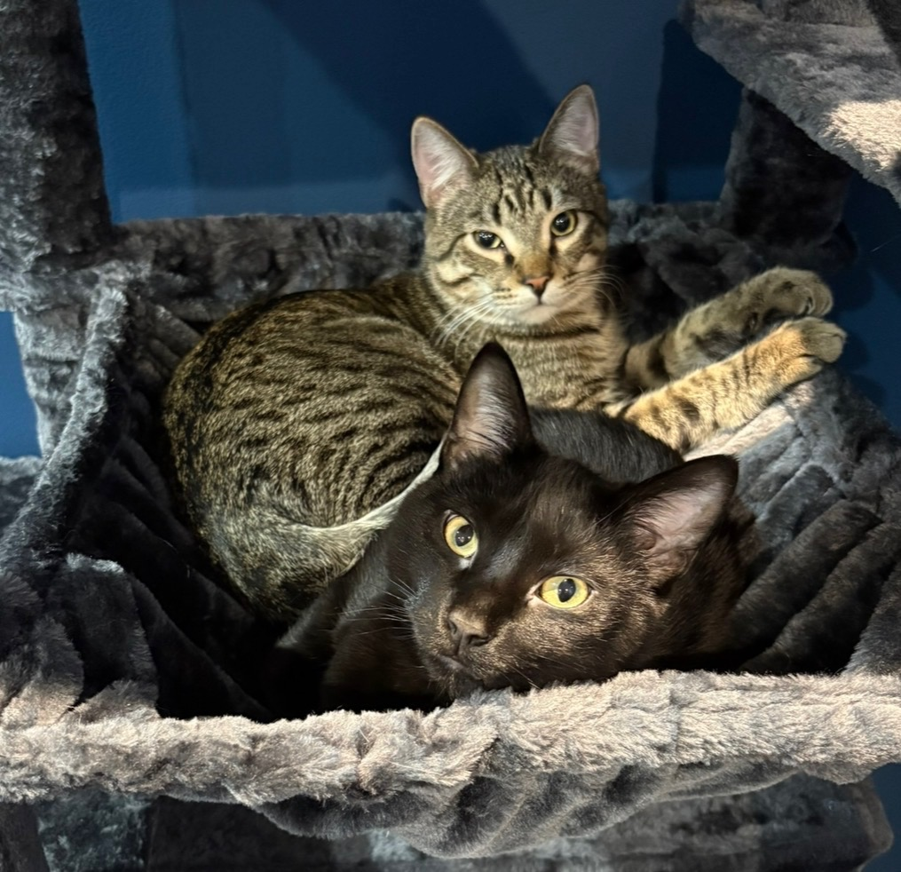
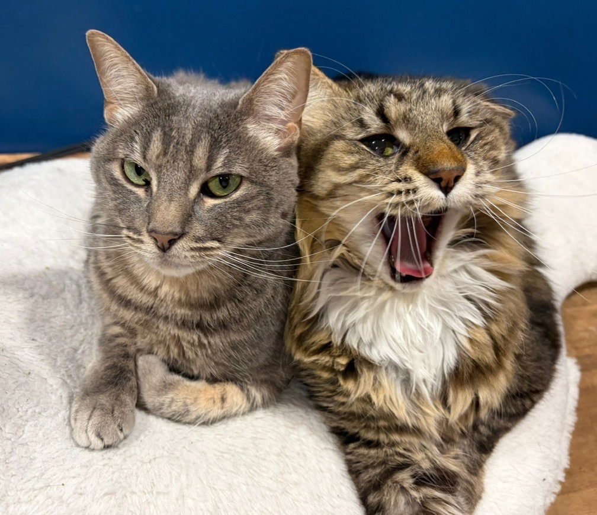
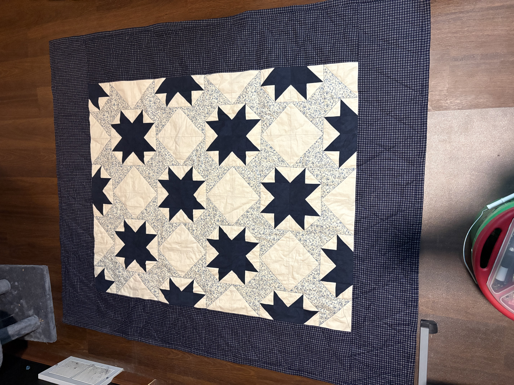
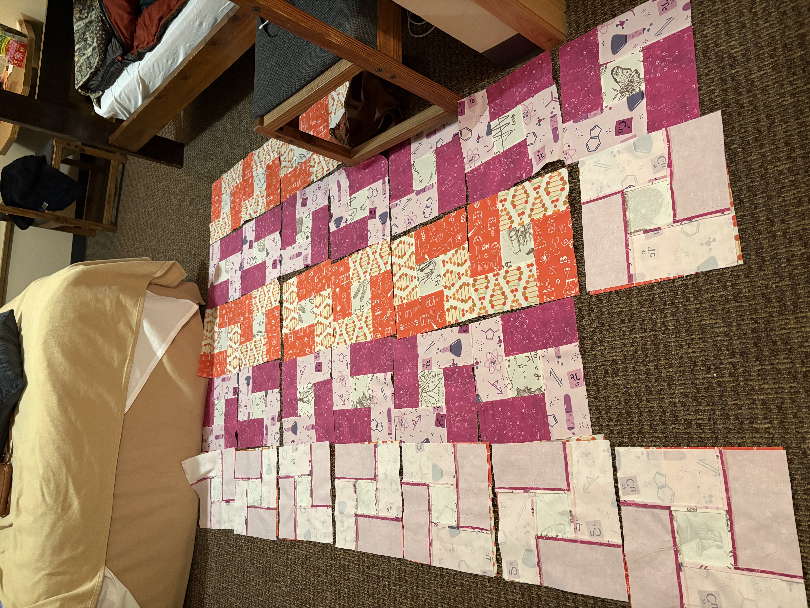
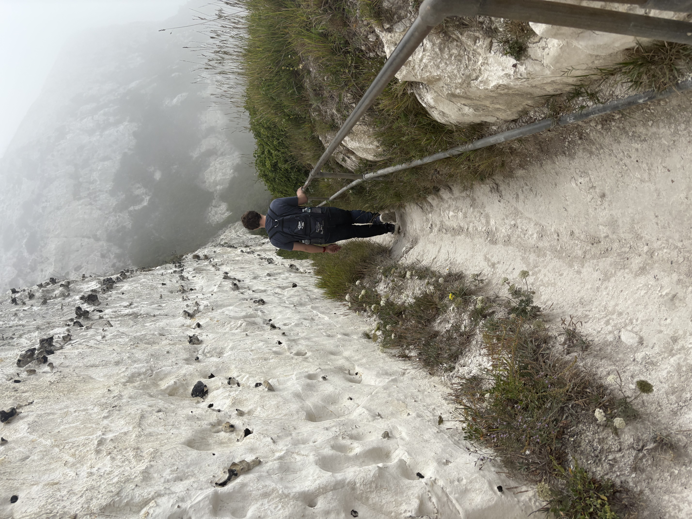

Cats


I have six cats — Odin, Freya, Tyr, Hel, Kurt, and Loki — and they all get along surprisingly well with each other and with most people. Kurt and Loki are definitely the social butterflies of the group. They love meeting new people, demand constant attention, and will happily follow anyone around the house. They even enjoy car rides and walks, which always makes them a hit with visitors. Tyr and Hel are much more reserved. They’re both shy and tend to keep to themselves, but once they warm up to someone, they can be incredibly sweet and affectionate. It just takes patience and a gentle approach. Odin and Freya fall somewhere in the middle. They’re calm, easygoing, and comfortable with just about anyone. Out of all the cats, they bring the most peaceful energy to the house, balancing out the bold personalities of the others.
Quilting


I’ve been quilting for about three years now, and in that time I’ve completed four full‑sized quilts along with plenty of baby quilts and smaller projects. My personal record is finishing a queen‑sized quilt in just three days from start to finish — a whirlwind of cutting, piecing, and stitching that still makes me proud. Quilting has become one of my favorite creative outlets. There’s something incredibly satisfying about making something with my own hands, especially when it’s for someone I care about and I know it will be used and loved for years. One of the parts I enjoy most is choosing the fabrics and planning the color scheme. I can spend ages mixing and matching prints until everything feels just right. Most of my quilting is done by machine, and I rely on my old Kenmore — a true workhorse. It’s only broken down a couple of times, and it’s the first machine I’ve owned that can sew leather or power through up to six layers of denim without snapping a needle. Because it runs at a high speed and has great pressure, it handles the actual quilting beautifully without needing any special feet or attachments. It’s sturdy, dependable, and honestly one of my favorite tools in the whole process.
Hiking

Hiking is another one of my favorite hobbies, and I love going on both long and short trips with my partner and a close friend. We enjoy the fresh air, the scenery, and the exercise, and every trail feels a little different from the last. My friend is an amazing photographer and usually brings a good camera along, capturing beautiful shots of each lookout, waterfall, or even an interesting leaf along the way. One of our favorite places to visit is Gooseberry Falls, a local state park known for its lovely waterfalls that look stunning in both warm and cold weather. In the winter, the falls often freeze into a shimmering wall of ice that looks like it’s still flowing. We’ve also taken trips to farther destinations, and one of the most memorable was Iceland. The weather there can be intense, but the landscapes are breathtaking and the waterfalls are some of the most beautiful we’ve ever seen.